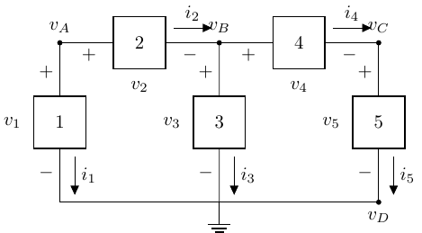
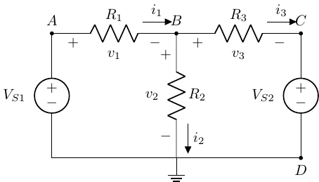

BME253L - Fall 2025
Duke University
September 8, 2025
Practice using voltage and current division, with equivalent resistances, to analyze circuits.
Introduce and implement Node Voltage Analysis (NVA)
Introduce and implement Mesh Current Analysis (MCA)
Given: \(v_s = 300 V\), \(R_1 = R_2 = R_0 = 100 \Omega\), \(R_3 = 200 \Omega\)
Voltage division of nodes \(B \rightarrow C \rightarrow D\).
\(v_o = v_3 \frac{R_o}{R_o + R_2}\)
\[ \begin{gather} v_3 = v_s \frac{R_3 || (R_o + R_2)}{R_1 + R_3 || (R_o+R_2)} \\ v_o = 75 V \end{gather} \]
Note
We didn’t have the explicitly use KCL, KVL or Ohm’s law (but they are all in play for the voltage division and equivalent resistance relationships)!
\[ \begin{gather} i_1 = i_s \frac{R_{eq}}{R_1 + R_{eq}} \\ R_{eq} = R_2 || (R+R') \\ \end{gather} \]
Let \(R_3 = R + R'\) (series equivalent), just to make expression easier to read.
\[ i_1 = i_s \frac{R_2 R_3}{R_2 R_3 + R_1 R_3 + R_1 R_2} \]
Example
A circuit with 6 elements yields 12 equations and 12 unknowns!
\[ \begin{gather} i_R = \frac{v_A - v_B}{R} \\ v_R = v_A - v_B \end{gather} \]
GND = 0), and component voltages.
\[ \begin{align} v_1 & = v_A - v_D = v_A \\ v_2 & = v_A - v_B \\ v_3 & = v_B - v_D = v_B \\ v_4 & = v_B - v_C \\ v_5 & = v_C - v_D = v_C \end{align} \]
Important
Note that 5 unknown voltages (\(v_{1-5}\)) have been reduced to 3 (\(v_{A-C}\))!
Nodes shared by components get reduced.
The reference (ground) node is 0.
Identify & label all nodes.
Label component voltages.
Select & label reference node (ground).
Tip
Choose a reference node that is shared by a lot of components. Since it is “0”, that node will disappear from all equations.
\[ \begin{align} v_E & = 0 \\ v_s & = v_A - v_E = v_A \\ v_1 & = v_A - v_B \\ v_2 & = v_B - v_E = v_B \\ v_3 & = v_B - v_C \\ v_4 & = v_C - v_E = v_C \\ v_5 & = v_C - v_D \\ v_6 & = v_D - v_E = v_D \end{align} \]
\[ \begin{align} B & : i_1 = i_2 + i_3 \\ C & : i_3 = i_4 + i_5 \\ D & : i_5 = i_6 \end{align} \]
\[ \begin{align} i_1 & = \frac{v_A - v_B}{R_1} = \frac{v_S - v_B}{R_1} \\ i_2 & = \frac{v_B}{R_2} \\ i_3 & = \frac{v_B - v_C}{R_3} \\ i_4 & = \frac{v_C}{R_4} \\ i_5 & = \frac{v_C - v_D}{R_5} \\ i_6 & = \frac{v_D}{R_5} \end{align} \]
\[ \begin{gather} \frac{v_s - v_B}{R_1} = \frac{v_B}{R_2} + \frac{v_B-v_C}{R_3} \\ v_B\left( \frac{-1}{R_1}-\frac{1}{R_2}-\frac{1}{R_3} \right) + \frac{v_C}{R_3} = \frac{-v_s}{R_1} \end{gather} \]
\[ \begin{gather} \frac{v_B-v_C}{R_3} = \frac{v_C}{R_4} + \frac{v_C-v_D}{R_5} \\ \frac{v_B}{R_3} + v_C\left(\frac{-1}{R_3}-\frac{1}{R_4}-\frac{1}{R_5} \right) + \frac{v_D}{R_5} = 0 \end{gather} \]
\[ \begin{gather} \frac{v_C - v_D}{R_5} = \frac{v_D}{R_6} \\ \frac{v_C}{R_5}+v_D\left(\frac{-1}{R_5}-\frac{1}{R_6} \right) = 0 \end{gather} \]
We now have 3 equations and 3 unknowns!
Setup 3x3 matrix with 3 linear, independent rows and columns to solve for \([v]\).
\[ \begin{bmatrix} \left(-\frac{1}{R_1}-\frac{1}{R_2}-\frac{1}{R_3}\right) & \frac{1}{R_3} & 0 \\ \frac{1}{R_3} & \left(-\frac{1}{R_3}-\frac{1}{R_4}-\frac{1}{R_5}\right) & \frac{1}{R_5} \\ 0 & \frac{1}{R_5} & \left(-\frac{1}{R_5}-\frac{1}{R_6}\right) \end{bmatrix} \begin{bmatrix} v_B \\ v_C \\ v_D \end{bmatrix} = \begin{bmatrix} \frac{-v_s}{R_1} \\ 0 \\ 0 \end{bmatrix} \]

Nodes A & C are set by two voltage sources.
\(v_A = v_{S1}\)
\(v_B = v_{S2}\)
Node D is reference (0).
Only \(v_B\) is unknown.
\(v_1 = v_{S1} - v_B\)
\(v_2 = v_B\)
\(v_3 = v_B - v_{S2}\)
KCL @ B: \(i_1 = i_2 + i_3\)
\[ \begin{gather} \frac{v_{S1} - v_B}{R_1} = \frac{v_B}{R_2} + \frac{v_B - V_{S2}}{R_3} \\ v_B = \frac{\frac{v_{S1}}{R_1} + \frac{v_{S2}}{R_3}}{\frac{1}{R_1} + \frac{1}{R_2} + \frac{1}{R_3}} \end{gather} \]
Identify meshes (closed loops, like used for NVA).
Assign unknonw mesh currents in a clockwise direction.
Important
It is okay to assign a mesh current orientation that is opposite that of a current source. That will work itself out in the sign of the current.
Apply KVL to each mesh with mesh currents being used for circuit elements.
Solve linear set of equations.
\[ \begin{gather} -v_s + i_A R_1 + (i_A - i_B) R_2 = 0 \\ v_s = i_A (R_1 + R_2) - i_B R_2 \end{gather} \]
Important
\(i_A\) and \(i_B\) are not the physical element currents; they are the mesh currents. The physical currents will be the superposition of the relevant mesh currents.
\[ \begin{gather} i_B R_3 + (i_B - i_C) R_4 + (i_B - i_A) R_2 = 0 \\ -i_A R_2 + i_B (R_2 + R_3 + R_4) - i_C R_4 = 0 \end{gather} \]
\[ \begin{gather} i_C R_5 + i_C R_6 + (i_C - i_B) R_4 = 0 \\ -i_B R_4 + i_C (R_4 + R_5 + R_6) = 0 \end{gather} \]
\[ \begin{bmatrix} R_1 + R_2 & -R_2 & 0 \\ -R_2 & R_2 + R_3 + R_4 & -R_4 \\ 0 & -R_4 & R_4 + R_5 + R_6 \end{bmatrix} \begin{bmatrix} i_A \\ i_B \\ i_C \end{bmatrix} = \begin{bmatrix} v_s \\ 0 \\ 0 \end{bmatrix} \]
Looks like Ohm’s Law!
\[ \begin{gather} \bar{R} \bar{I} = \bar{V} \\ \bar{I} = \bar{R}^{-1} \bar{V} \end{gather} \]
Mesh A: \(-V_S + i_A R_1 + (i_A - i_B) R_2 = 0\)
Mesh B: \(i_B = -I_S\)
Solve for \(i_A = \frac{V_s - I_s R_2}{R_1 + R_2}\)
Solve for physical voltages and currents in terms of mesh currents.
Solve for \(i_4\).
Important
Remember to keep all mesh current orientations clockwise!
\[ i_A = I_{S1} \]
\[ I_{S2} = i_C - i_B \]
\[ v_{R_2} + v_{R_3} + v_{R_4} + v_{R_5} = 0 \]
\[ \begin{gather} (i_B - i_A) R_2 + i_B R_3 + i_C R_4 + i_C R_5 = 0 \\ i_A = I_{S1} \\ i_C = i_B + I_{S2} = i_4 \\ i_4 = I_{S1} \left(\frac{R_2}{R_2 + R_3 + R_4 + R_5}\right) + I_{S2} \left(\frac{R_2 + R_3}{R_2 + R_3 + R_4 + R_5}\right) \end{gather} \]